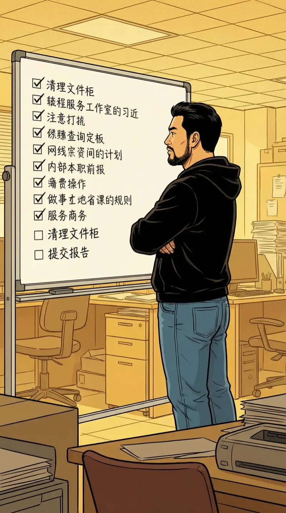
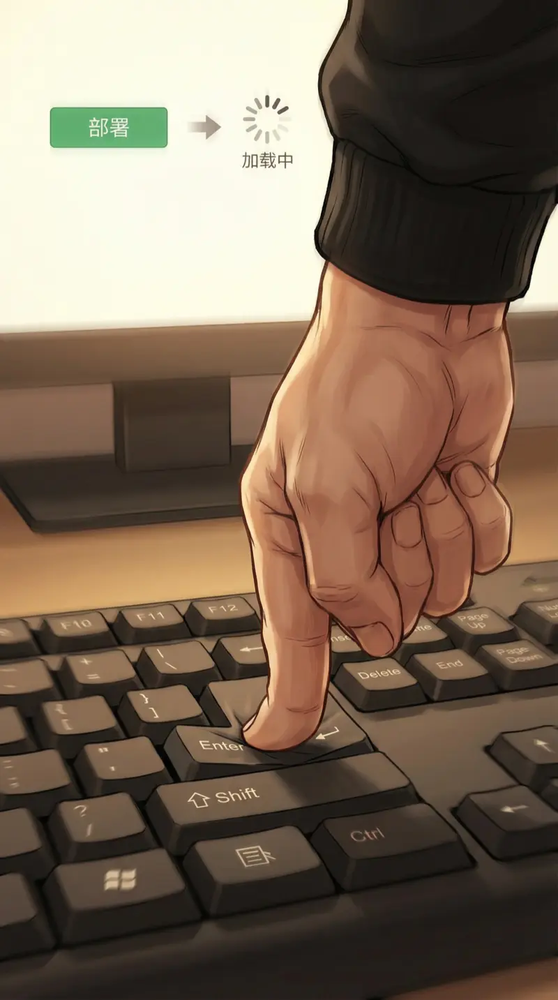
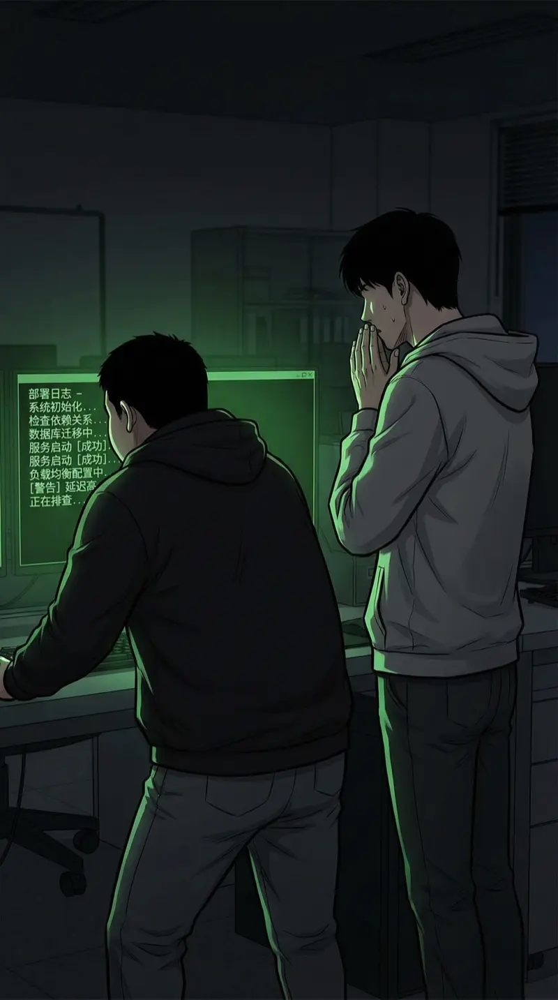
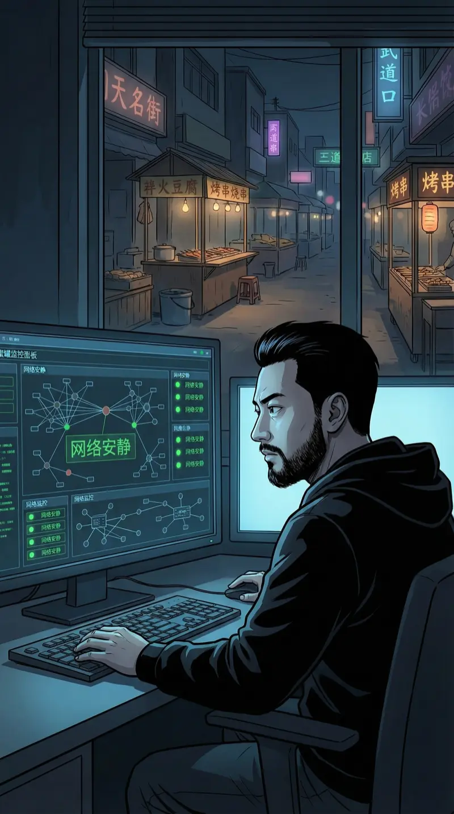
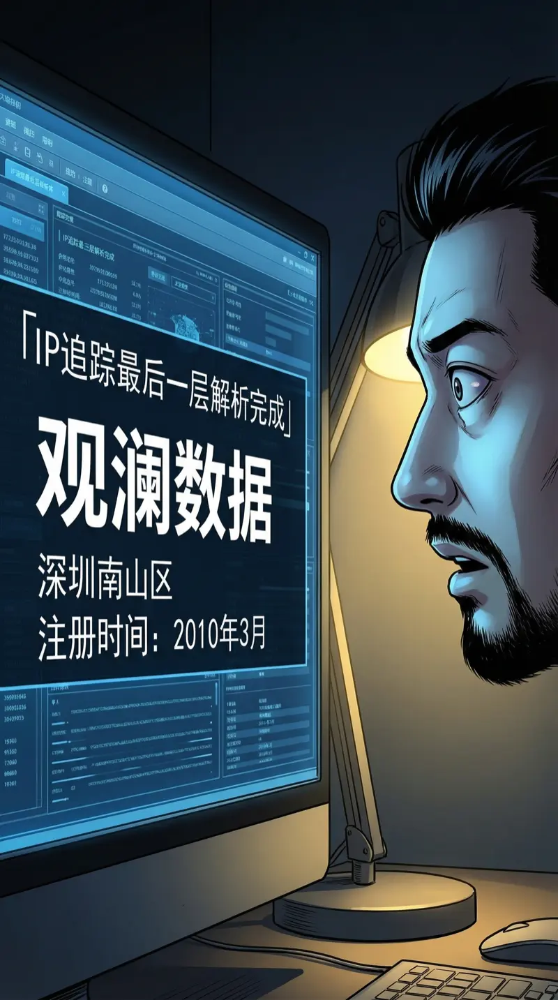
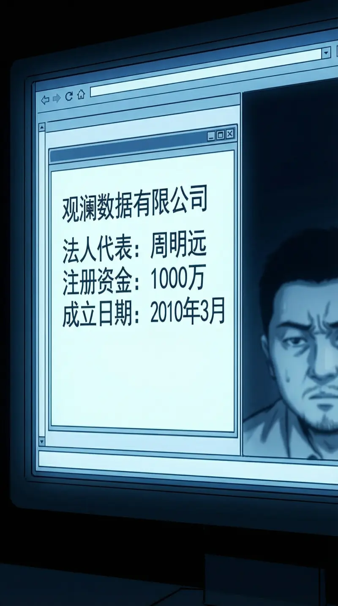
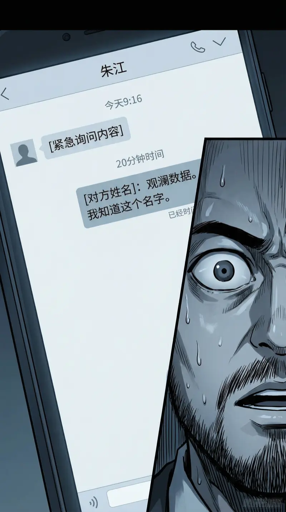

2010年9月，北京五道口。晚上十点，整条街的写字楼都黑了，只有三楼那间办公室还亮着灯。
"盾甲"上线倒计时两小时。
陈磊趴在两台显示器中间，一台跑压力测试，一台开着一个叫"饿了么"的新网站——页面简陋得像学生作业。

我站在白板前，看着上面的发布检查清单。二十三项，勾掉了二十一项。
剩下两项。第二项是我私下加的。陈磊不知道。
☐ SDK加密证书更新（周峰那边还在出）
☐ 蜜罐日志系统复查
我看到陈磊测试报告里的注释，忍不住笑了。他抬头看我："你笑什么？"
我说："你的遗嘱写得比代码好。"
陈磊："至少遗嘱没有bug。"
周峰通过视频通话加入——他在深圳家里，背景是客厅。他老婆端着一碗面经过镜头，朝我们挥了挥手。
SDK证书在传输中，预计二十分钟到位。
23:55。陈磊："可以了。你来按？"
屏幕上是发布脚本的确认界面。一个大大的绿色按钮：部署。
在发现系统可能被渗透的情况下，是否仍按计划上线？

00:00。
按下按钮。

终端开始滚动部署日志。绿色的字符一行行刷过。
陈磊小声说："如果这玩意儿崩了，我们的投资人会比服务器先崩。"
我："上辈子……我是说，凭直觉，不会崩。"
00:03。第一个用户。00:07。第十个。00:15。一百个。
陈磊突然跳起来大叫："一百个用户！"然后看了看四周空无一人的办公室，有点尴尬。
"我上辈子……算了，我第一次做的APP上线一个月才三个用户。其中两个是我妈和我姑。"
陈磊："第三个呢？"
我沉默了一秒："我自己。用了另一个手机号注册的。"
陈磊差点把咖啡喷到屏幕上。
凌晨一点半。陈磊终于趴在键盘上睡着了。我给他披了件外套——这已经成了我们的固定节目。

我独自坐在蜜罐监控面板前。外面的五道口夜市已经收摊了，只剩几个深夜烤串摊的灯还亮着。
服务器稳定。API响应正常。没有崩溃。
蜜罐那边——太安静了。
01:47。蜜罐触发了。
一个访问请求。来源IP经过三层代理——但我的蜜罐设计了四层追踪。
我耐心地剥洋葱。
第一层代理：新加坡。
第二层代理：法兰克福。
第三层代理：东京。
第四层——真实IP解析。
我以为会看到天明科技，或者启明星基金。

都不是。
IP解析指向一个叫"观澜数据"的公司。注册地：深圳南山区。注册时间——2010年3月。
我的手开始微微发抖。不是恐惧，是那种解方程解到最后一步发现变量比想象中多一个的感觉。

工商信息异常干净。法人代表：周明远——查不到任何社交痕迹。注册资金一千万。对一个2010年3月的新公司来说，这个数字太整齐了。
蜜罐揭示了第四方"观澜数据"。你怎么处理这个信息？
���后我看到了一条关联信息——观澜数据的备案服务器上，跑着一套自研的数据分析系统。
这套系统的底层架构，用的是2019年才会被提出的分布式计算范式。
2010年不应该有人用这个。除非——
我靠在椅背上，盯着天花板。
"观澜数据"背后的人，也是穿越者。第四个穿越者。
而且这个人比张维还早——3月注册公司，2月或更早穿越。三方棋局变成了四方。
陈磊突然翻了个身，梦话说了一句："指针没判空……"然后继续打呼。
我看了他一眼，心想：你的梦里永远在debug，而我的现实比你的梦还离谱。
而且，这个第四方不像我、张维、林晓蝶——他们三个月来一直在暗处观察，从未暴露。
直到今晚，盾甲上线后，才第一次触碰我的系统。
为什么是今晚？为什么是盾甲上线的这个节点？
我分别给张维和林晓蝶发了加密短信。
给张维的："有人在看我们所有人。不是你认识的人。小心。"
给林晓蝶的："盾甲上线后，第三方访问了我的蜜罐。不是你，也不是张维。"
然后我等。
张维的回复来得很快——四分钟。"你确定？"两个字。
简洁。但我能从速度判断：他慌了。一个不慌的人不会在凌晨两点四分钟内回复。

林晓蝶的回复晚了二十分钟。
"观澜数据。我知道这个名字。"
我的心跳加速。
林晓蝶说她知道"观澜数据"。你怎么回复？
发送。然后等。
三分钟。五分钟。八分钟。
林晓蝶没有立刻回复这一次。
然后她发来一条长消息。我一个字一个字读——
"观澜数据的周明远，在我穿越回来的时间线上，是2027年AI安全领域最大的黑天鹅事件的核心人物。他不是普通的穿越者。他比我们所有人都早。他是——"
"第一个穿越者。"
外面天快亮了。五道口的早点摊开始支棚子。卖煎饼的老大爷推着三轮车经过楼下，车轮在凹凸不平的路面上发出咯吱声。
而我坐在这里，刚知道了一件改变整个棋局的事——穿越不是偶然的。有一个"第一个穿越者"。他比所有人都早回来，在暗处布局。
而我们三个，可能都在他的棋盘上。
陈磊翻了个身。他的手机屏幕亮了——凌晨四点的闹钟，备注是："检查服务器。"
我看着他安详的睡脸，突然有点羡慕。他的世界里，最大的危机是指针没判空。
手机又亮了。一条匿名短信。无法追溯来源。只有一行字：
"你的蜜罐不错。但你放错了位置。你应该看看自己的合伙人。"
第六章 · 完
下章预告——
"你应该看看自己的合伙人"——是指陈磊？还是上辈子的投资伙伴？
"第一个穿越者"周明远到底想要什么？
而盾甲的第一天上线数据——异常得漂亮，漂亮得不像真的。
三方变四方，暗流汹涌。